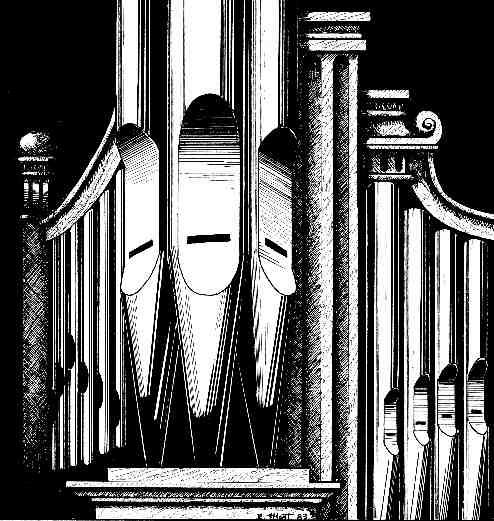

Orgues et organistes
Organs and Organists

L'orgue au Québec
Organs in Québec
L'orgue au Canada
Organs in Canada
L'orgue dans le monde
Organs around the World
Autres orgues
Other Organs
Retour au menu principal
Return to main menu